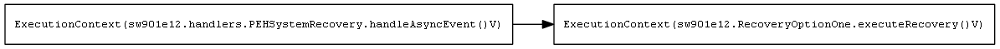

<body>
<h2>Call Graph</h2>

<h2>List of referenced methods</h2>
<ul>

<li/> <a href="sw901e12.RecoveryOptionOne.executeRecovery__V.html">sw901e12.RecoveryOptionOne.executeRecovery()V</a>
<ul>
<li/>Size in words: 17 (1 blocks)
<li/>Loop Bounds: [; [0,1024], ; [0,1024]]
<li/>Referenced methods: []
</ul>

<li/> <a href="sw901e12.handlers.PEHSystemRecovery.handleAsyncEvent__V.html">sw901e12.handlers.PEHSystemRecovery.handleAsyncEvent()V</a>
<ul>
<li/>Size in words: 5 (1 blocks)
<li/>Referenced methods: [sw901e12.RecoveryOptionOne.executeRecovery()V]
</ul>
</body>